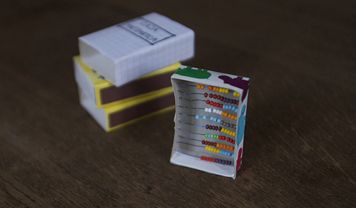
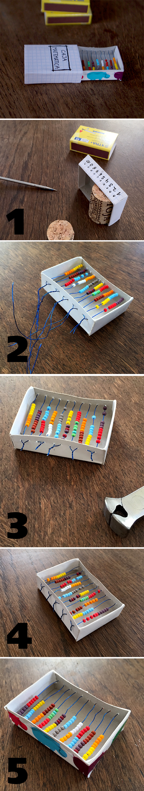

Ein Taschen-Abakus! So gewinnen wir das Vertrauen zu größeren Zahlen, wenn die Finger beider Hände nicht mehr ausreichen um diese zu zählen. 1. Piekse 10 Löcher, mit gleichem Abstand zueinander, in beide längliche Seiten der Streichholzschachtel (Ich habe ein Stück Korken benutzt, damit ich die Box nicht eindrücke). 2. Führe einen Draht durch das erste Loch, fädele 10 Perlen (5 von einer und weitere 5 einer anderen Farbe) und fädele den Draht dann auf der anderen Seite durch das zweite Loch wieder zurück (es werden wieder 10 Perlen augefädelt). Das muss Du 5 mal wiederholen. 3. Drehe immer zwei Ende zusammen, bis sie sich nicht mehr öffnen. 4. Schneide den überschüssigen Draht ab 5. Drücke die Enden nach unten 6. Klebe Washitape rundherrum um die Enden zu verdecken (so kann sich Keiner piecksen). Und jetzt wir gerechnet... Diese kleine Box ist für David !! :-)
